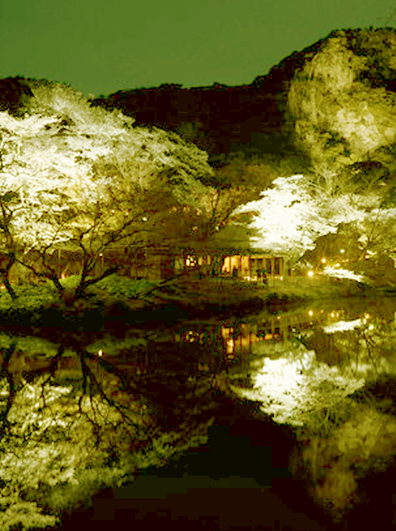

桃源郷は、俗界を離れた他界・仙境。ユートピアとは似て非なる、正反対のもの。武陵桃源ともいう。
JUGEMU
A paradise on earth is the death and the cloudland away from the world. Something contrary a fault will resemble an utopia, and is. I also say Takeoka Xanadu.

jugemu_PT
10/27